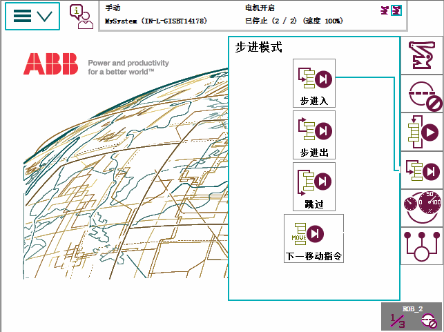
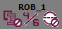

设置单步模式后，您可以定义逐步执行程序的方式。详情请参阅单步执行指令

Step Into（步进至） | 单步进入已调用的例行程序并逐步执行它们。 |
Step Out（跳出） | 执行当前例行程序的其余部分，然后在例行程序中的下一指令处（即调用当前例行程序的位置）停止。 无法在 Main 例行程序中使用。 |
Step Over（跳过） | 一步执行调用的例行程序。 |
下一移动 | 步进到下一条运动指令。在运动指令之前和之后停止，这样可以方便修改位置等操作。 |
 | 注意 如果选择跳出/跳过/下一移动步进模式，在快速设置菜单也会显示一个箭头图标(  )，表示所选模式并不是进入步进模式。 |